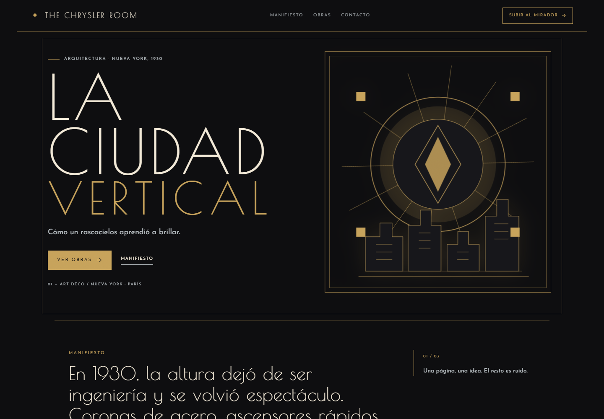
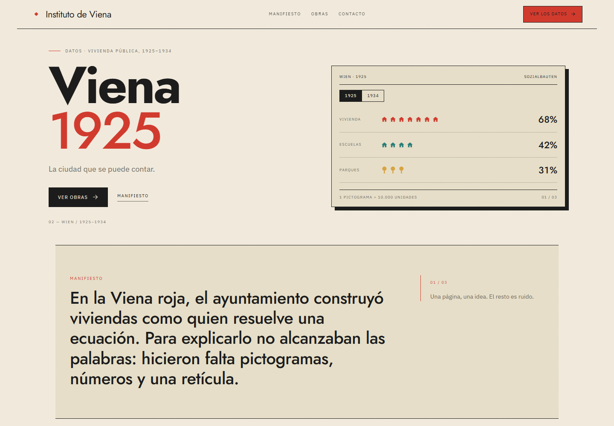
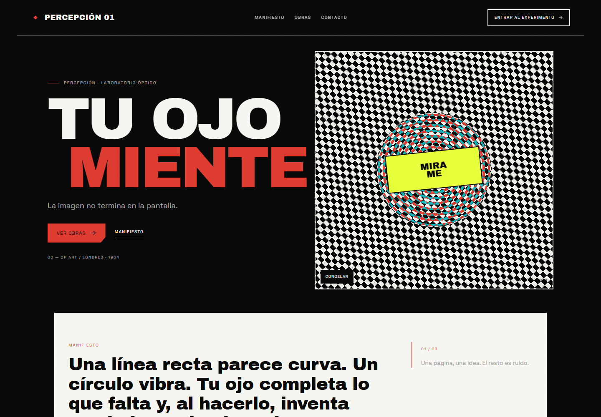
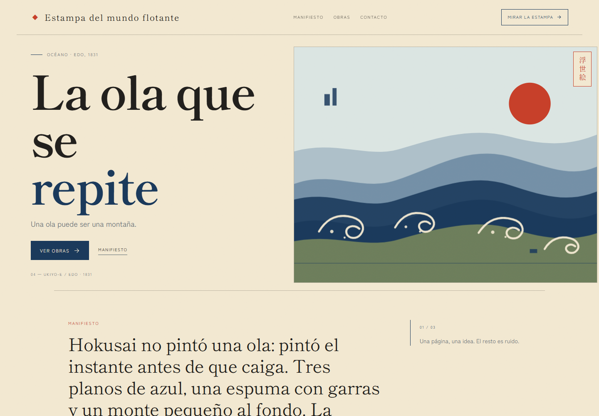
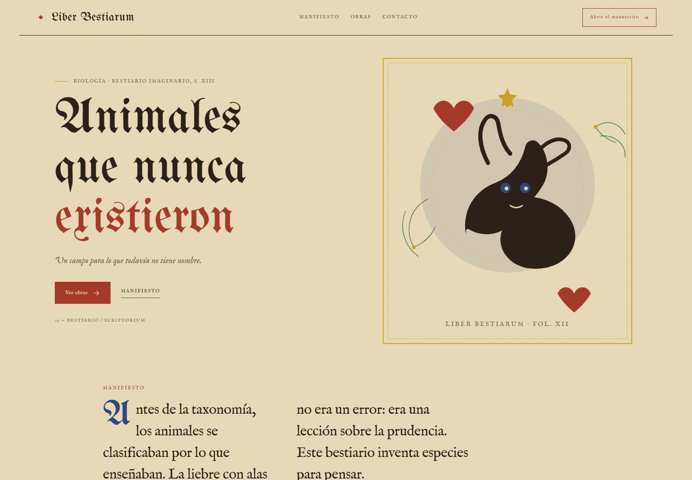
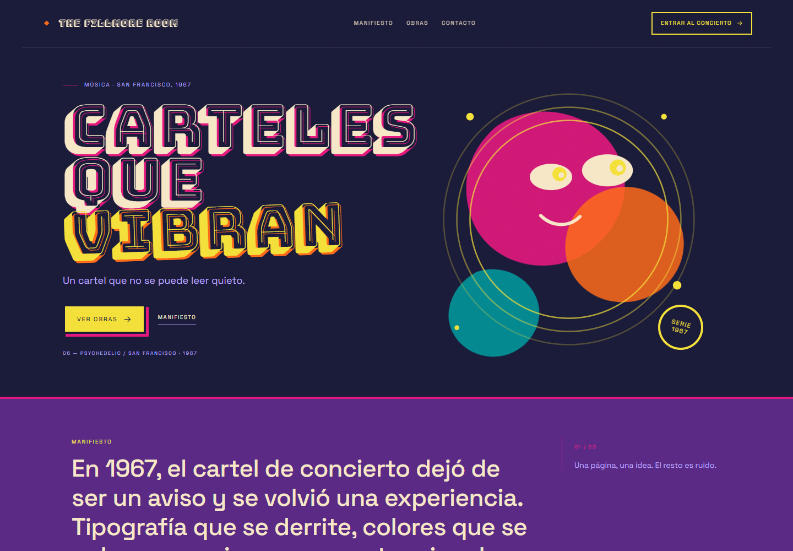
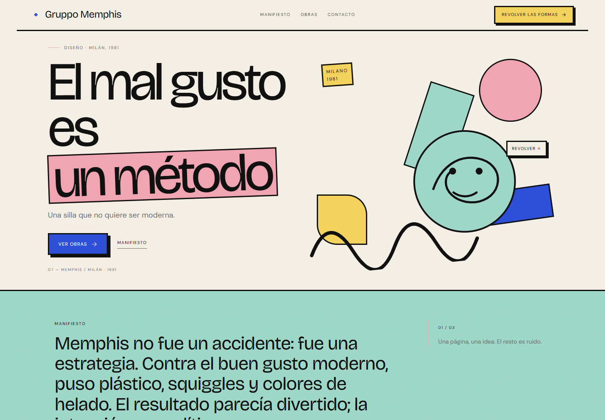
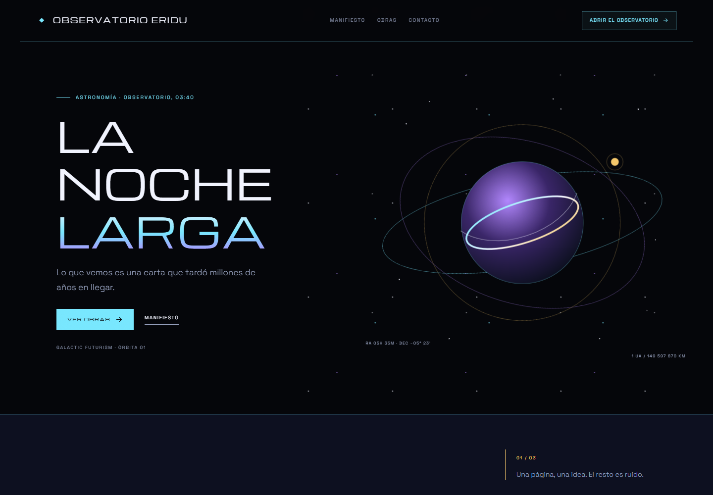
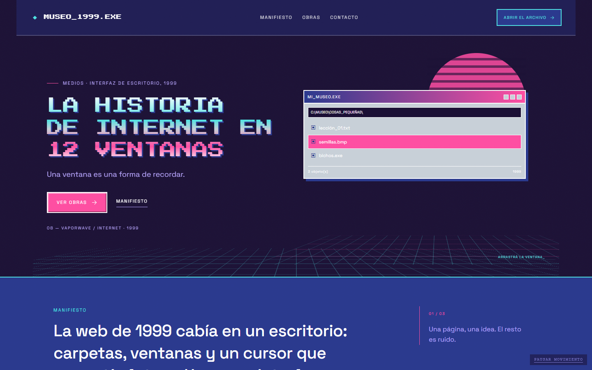

La ciudad vertical
artdeco · Arquitectura · Nueva York, 1930
Abrir estilo →
Viena 1925
isotype · Datos · Vivienda pública, 1925–1934
Abrir estilo →
Tu ojo miente
opart · Percepción · Laboratorio óptico
Abrir estilo →
La ola que se repite
ukiyoe · Océano · Edo, 1831
Abrir estilo →
Animales que nunca existieron
bestiary · Biología · Bestiario imaginario, s. XIII
Abrir estilo →
Carteles que vibran
psychedelic · Música · San Francisco, 1967
Abrir estilo →
El mal gusto es un método
memphis · Diseño · Milán, 1981
Abrir estilo →
La noche larga
galactic · Astronomía · Observatorio, 03:40
Abrir estilo →
La historia de internet en 12 ventanas
vaporwave · Medios · Interfaz de escritorio, 1999
Abrir estilo →